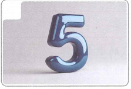
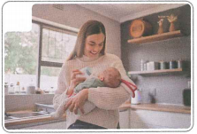
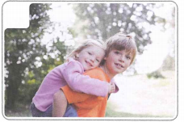
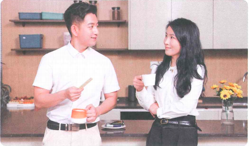
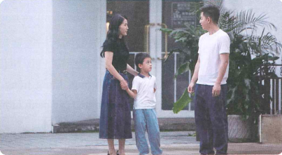
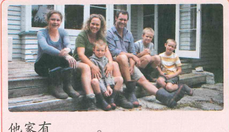
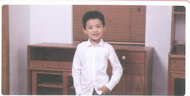
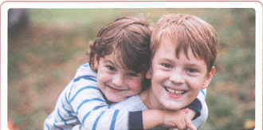

我有两个孩子
Chị có hai con
21 từ mới · 3 bài khóa · 有 · số đếm · 呢 · danh lượng từ · hỏi tuổi
Khởi động
Mỗi ảnh là một câu riêng. Chọn từ phù hợp với hình.
Ảnh 1

Ảnh 2
Ảnh 3
Ảnh 4

Ảnh 5

Ảnh 6
Cụm 1 · Từ vựng
3 từ trước Bài khóa 1.
Bài khóa 1 · 她有多少个学生？
Ngữ cảnh: Lưu Minh và Vương Nhất Tuyết đang trò chuyện ở trong nhà.
Ngữ pháp 1 · 有 + cách diễn đạt số
Câu chữ “有” (1)
“有” biểu thị sự sở hữu. Phủ định là “没/没有”.
她有二十个学生。
她有一个姐姐。
我没有姐姐。
Cách viết và đọc số
0–99: 零、一、二、三、四、五、六、七、八、九、十…
100–9999: 一百、一千… Ví dụ: 208 = 二百零八；1528 = 一千五百二十八；9999 = 九千九百九十九。
二 / 两: 二 thường dùng trong số đếm; 两 thường đứng trước lượng từ: 两个人、两口人、两本书。
Cụm 2 · Từ vựng
10 từ trước Bài khóa 2.
Nghe trước Bài khóa 2
🎧 Nghe hội thoại hai lượt rồi chọn đáp án đúng
Bài khóa 2 · 你呢？

Ngữ cảnh: Vương Nhất Tuyết và Dương Đồng Lạc trò chuyện trong giờ nghỉ ở công ty.
Ngữ pháp 2 · 呢 (1) + danh lượng từ
Trợ từ ngữ khí “呢” (1)
“呢” ở cuối câu biểu thị nghi vấn, dùng để hỏi lại tình huống đã được nhắc trước đó.
我有两个哥哥，你呢？
我是中国人，你呢？
Danh lượng từ và cấu trúc danh lượng
Sau số từ thường phải có lượng từ.
四口人 · 两个人 · 两个学生
口 dùng chỉ số người trong gia đình; 个 là lượng từ thông dụng.
Cụm 3 · Từ vựng
8 từ trước Bài khóa 3.
Nghe trước Bài khóa 3
🎧 Nghe hội thoại hai lượt rồi chọn đáp án đúng
Bài khóa 3 · 我有两个孩子

Đọc hiểu: ① 王一雪有几个儿子？几个女儿？ ② 王一雪儿子今年几岁？
Ngữ pháp 3 · Cách hỏi tuổi
Hỏi trẻ em
您儿子几岁？— 他今年五岁。
“几岁” thường dùng hỏi tuổi trẻ nhỏ.
Hỏi người lớn hơn
您女儿多大？— 她今年十二。
Với người trên khoảng mười tuổi, thường hỏi “多大” thay vì “几岁”.
✏️ Luyện tập tổng hợp
Phần 1 · Chọn từ thích hợp điền vào chỗ trống
Câu hình 1

Câu hình 2
Câu hình 3

Câu hình 4

✅ Tổng kết
Bài 4 đã hoàn thành
- 21 từ mới, chia thành 3 cụm.
- 3 bài khóa với audio 4-1 / 4-3 / 4-5.
- Nút Play + Pause ở từng phần nghe.
- Câu chữ 有 và phủ định 没/没有.
- Số đếm, 二/两.
- Trợ từ 呢.
- Danh lượng từ và cấu trúc số + lượng từ + danh từ.
- Cách hỏi tuổi bằng 几岁 / 多大.
- Đầy đủ bài tập điền từ và 4 bài tập theo ảnh.
Điểm bài tập hình ảnh
Tính 4 câu hình ảnh ở phần luyện tập tổng hợp.